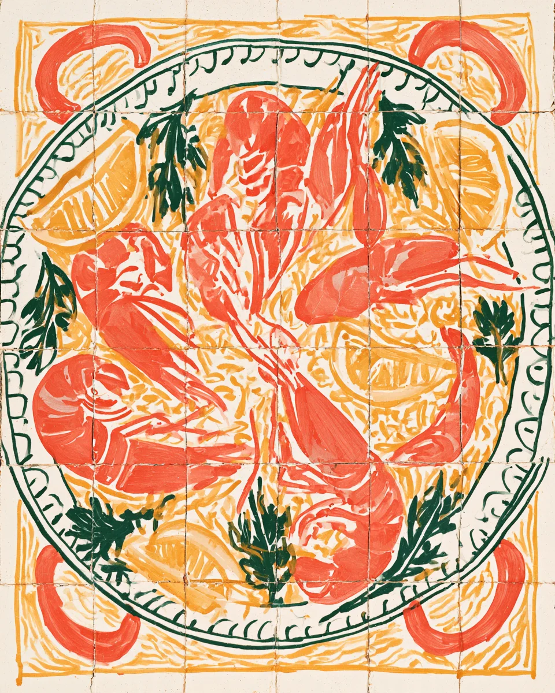
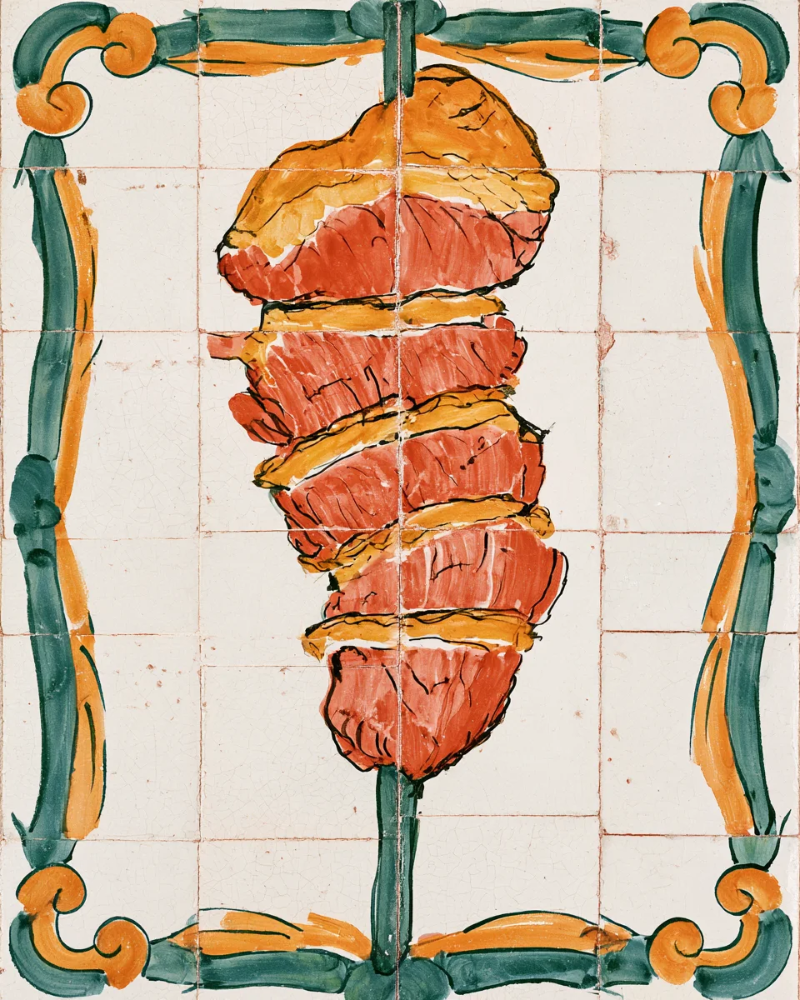
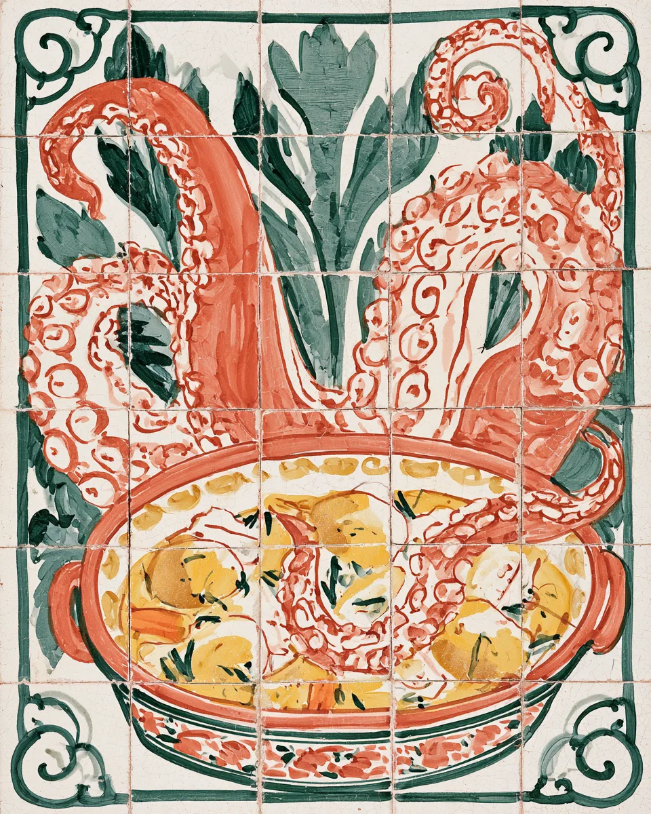
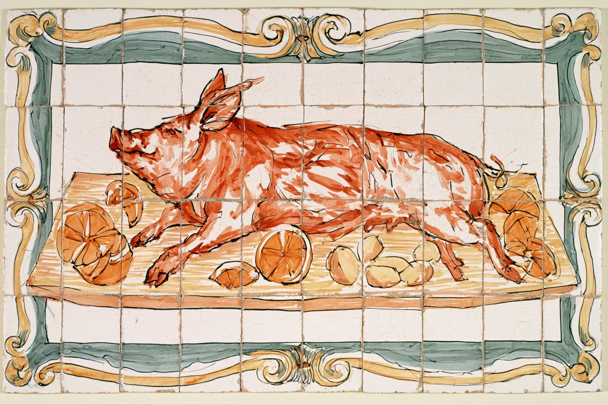
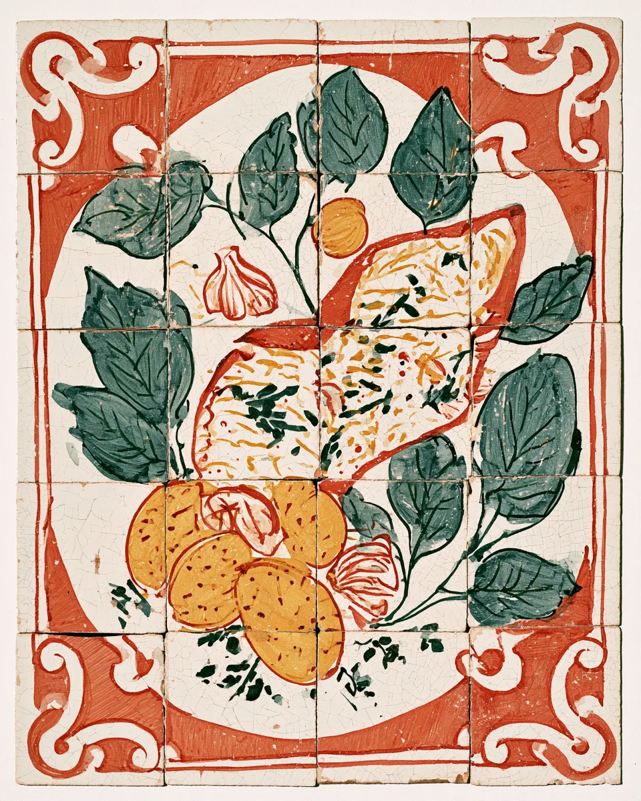
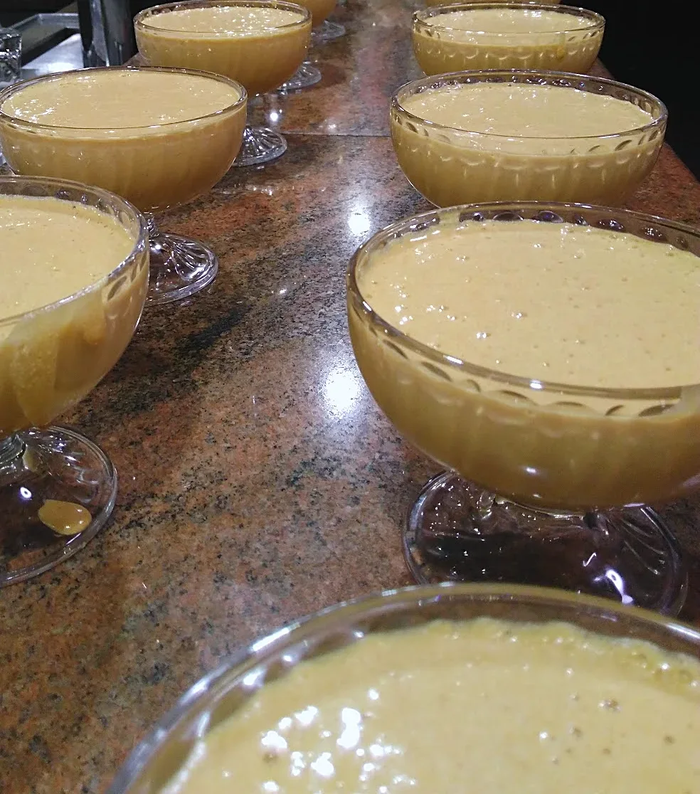
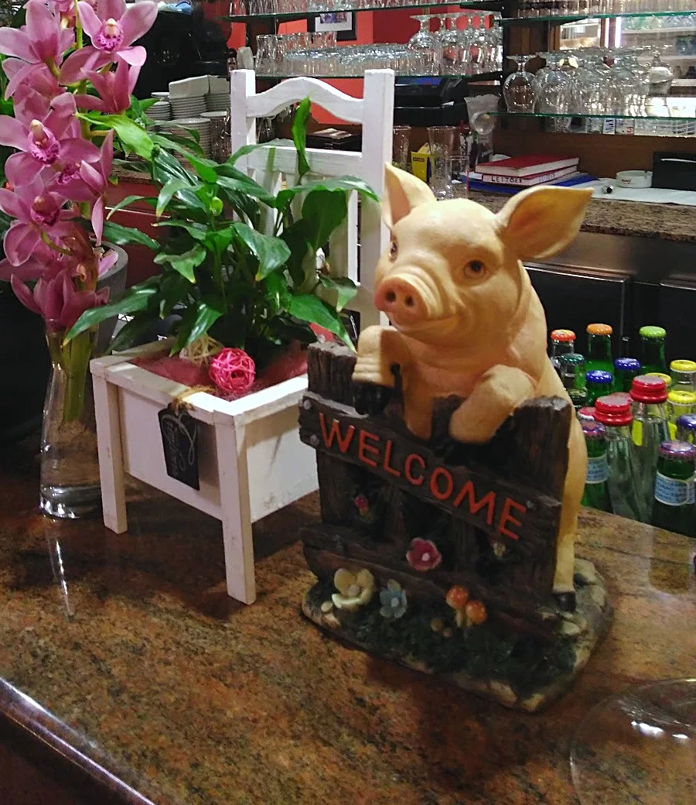
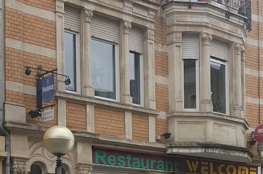

Welcome
Restaurant · Esch/Alzette · depuis 1995
7 jours sur 7 · 12:00–14:30 · 18:30–22:00
Sur place ou à emporter


Picanha
Picanha en tranches

Polvo
Poulpe

Leitão
Porcelet au feu de bois

Bacalhau à lagareiroMorue grillée


